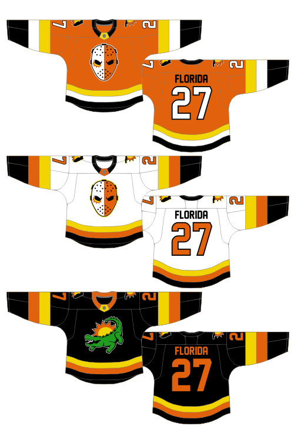

State Nickname Teams
For reasons I can’t quite explain, I find the nicknames of U. S. states pretty interesting. Maybe it’s because Canadian provinces don’t really have nicknames the same way—there are some well-known ones, like “The Island” (P. E. I.), “The Rock” (Newfoundland), and “La Belle Province” (Quebec), but they aren’t official, not every province has one, and they’re just not that cool. Here’s a list of nicknames of provinces and territories, but that’s not what this post is about. This post is about state nicknames. Every state except Wisconsin has an official one, and most states have a few additional descriptive, well-known, unofficial nicknames. There are a lot of teams, especially college teams, that use their state’s nickname either directly or as inspiration for their mascot; here are the ones I’ve found:
| State | Nickname | Team Name | League/Association |
|---|---|---|---|
| Arkansas | Natural State | Northwest Arkansas Naturals | Texas League |
| Indiana | Hoosier State | Indiana Hoosiers | NCAA |
| Iowa | Hawkeye State | Iowa Hawkeyes | NCAA |
| Louisiana | Pelican State | New Orleans Pelicans | NBA |
| Michigan | Wolverine State | Michigan Wolverines | NCAA |
| Nebraska | Cornhusker State | Nebraska Cornhuskers | NCAA |
| North Carolina | Tar Heel State | North Carolina Tar Heels | NCAA |
| Ohio | Buckeye State | Ohio State Buckeyes | NCAA |
| Oklahoma | Sooner State | Oklahoma Sooners | NCAA |
| Oregon | Beaver State | Oregon State Beavers | NCAA |
| South Dakota | Mount Rushmore State | Rapid City Rush | ECHL |
| Tennessee | Volunteer State | Tennessee Volunteers | NCAA |
| Utah | Beehive State | Salt Lake Bees | Pacific Coast League |
| West Virginia | Mountain State | West Virginia Mountaineers | NCAA |
| Wisconsin | Badger State | Wisconsin Badgers | NCAA |
With these in mind, I thought it would be interesting to see how other state nicknames would translate to team names, logos, and uniform designs. I’ll add designs to this post as I finish them. My plan is to have primary designs focus on states’ official nicknames with special alternate designs for notable unofficial nicknames or aspects of the state not covered by the primary identity. I’m not going to work in any particular order.
Here are the ideas for teams I have so far, subject to change:
| State | Nickname | Team Name | Sport |
|---|---|---|---|
| Alabama | Yellowhammer State | Montgomery Yellowhammers | Hockey |
| Alaska | The Last Frontier | Fairbanks Frontiersmen | Hockey |
| Arizona | Grand Canyon State | Flagstaff Canyon SC | Soccer |
| California | Golden State | Sacramento Gold | Baseball |
| Colorado | Centennial State | Lakewood Centennials | Hockey |
| Connecticut | Constitution State | Hartford Constitution | Basketball |
| Delaware | First State | Wilmington Firsts | Hockey |
| Florida | Sunshine State | Sarasota Shiners | Hockey |
| Georgia | Peach State | Savannah Peaches | Basketball |
| Hawaii | Aloha State | Honolulu Alohas | Basketball |
| Idaho | Gem State | Boise Gems | Football |
| Illinois | Prairie State | ????? | ????? |
| Kansas | Sunflower State | Wichita Sunflowers | Basketball |
| Kentucky | Bluegrass State | Lexington Bluegrass | Baseball |
| Massachusetts | Bay State | Provincetown Bays | Baseball |
| Maryland | Old State | ????? | ????? |
| Maine | Pine Tree State | Augusta Pines | Hockey |
| Minnesota | Land of 10,000 Lakes | Twin Cities Lakers | Baseball |
| Missouri | Show-Me State | ????? | ????? |
| Mississippi | Magnolia State | Jackson Magnolias | Soccer |
| Montana | Treasure State | Helena Treasures | Football |
| Nevada | Silver State | Silver Carson City | Soccer |
| New Hampshire | Granite State | Manchester Granites | Baseball |
| New Jersey | Garden State | Jersey City Gardeners | Baseball |
| New Mexico | Land of Enchantment | Santa Fe Enchanters | Hockey |
| New York | Empire State | Staten Island Emperors | Basketball |
| North Dakota | Peace Garden State | ????? | ????? |
| Pennsylvania | Keystone State | Harrisburg Keystones | Football |
| Rhode Island | Ocean State | Providence Ocean SC | Soccer |
| South Carolina | Palmetto State | Charleston Palmettos | Basketball |
| Texas | Lone Star State | Austin Lone Stars | Football |
| Vermont | Green Mountain State | ????? | ????? |
| Virginia | Old Dominion State | Norfolk Dominion SC | Soccer |
| Washington | Evergreen State | Olympia Evergreen SC | Soccer |
| Wyoming | Equality State | ????? | ????? |
FLORIDA: Sarasota Shiners
February-April 2020
In a lot of cases I’ve chosen state capitals or largest cities to base these teams in, but that wasn’t the case here. I’m trying to avoid putting teams in cities that already have teams playing at the top level of the same sport, which ruled out the Miami and Tampa Bay areas. Tallahassee, the capital of Florida, would still be an option, but “Tallahassee Shiners” doesn’t have the same ring to it, and “Shiners” seemed better suited to Sarasota anyway.
When I first started thinking about state nicknames as team nicknames, I was a bit worried about how they would all translate, so, to play devil’s advocate, I tried to think of the least intimidating state nickname. While there are others I was forgetting, it was the Sunshine State that came to mind. Sunshine is not very intimidating (sorry Phoenix Suns) but then it occurred to me that I could alter it to “Shiners”, which sounds to me like a tough, old-school kind of hockey team, since “shiner” is slang for a black eye. Hence, the primary logo is a pun; it’s a hockey mask with a black eye, except the black eye is a bit of sunshine. The secondary logo, which appears on the shoulders of all three jerseys, depicts the state of Florida with a similar sunshine pattern centred on Sarasota on the Gulf Coast. Admittedly the geometry of this secondary logo was another part of the reason I chose Sarasota.
The alternate logo is a reference to Florida’s unofficial nickname, “Alligator State”.
And, of course, the jerseys:

I played around with several different colour schemes, including yellow/orange/double green and yellow/orange/black/turquoise, but ultimately the cleaner look of yellow/orange/black prevailed. As you can see, I added green for the alligator on the alternate jersey, and I considered adding more throughout that jersey as well, but eventually decided to focus on team colours outside of the necessary green in the logo. The black base with orange and yellow gives it a strong ’80s Canucks vibe, but I think the colour scheme makes more sense for a Florida team than it did for a Vancouver team.